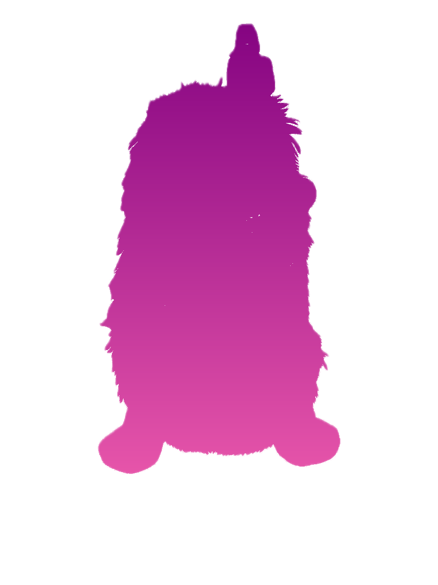

Chourigram
You
Your Story
C
caio_avatar
D
dani_avatar
D
doug_avatar
J
jenny_avatar
M
marcela_avatar
P
patty_avatar
S
sergio_avatar
S
sylvain_avatar
Y
yako_avatar
Y
yann_avatar
D
dani_avatar
9.9K likes
dani_avatar
6/26/2025
Y
yako_avatar
✓
9.8K likes
yako_avatar
6/29/2025
Home
Search
Create
Activity
Profile